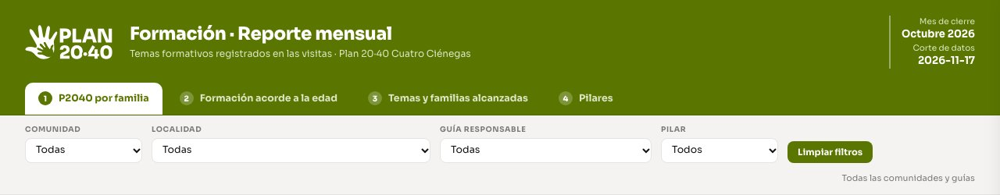
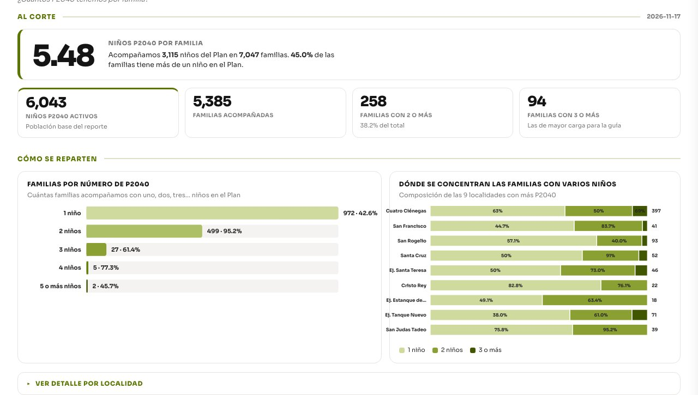
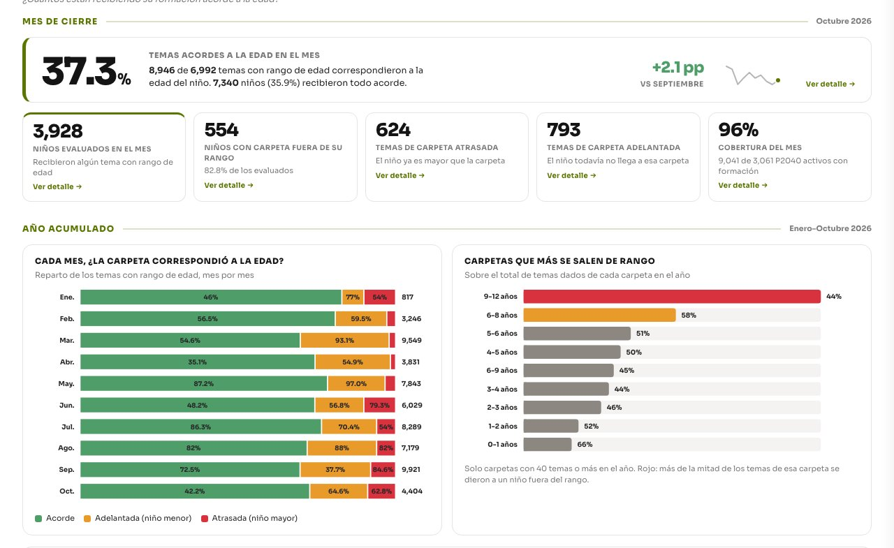
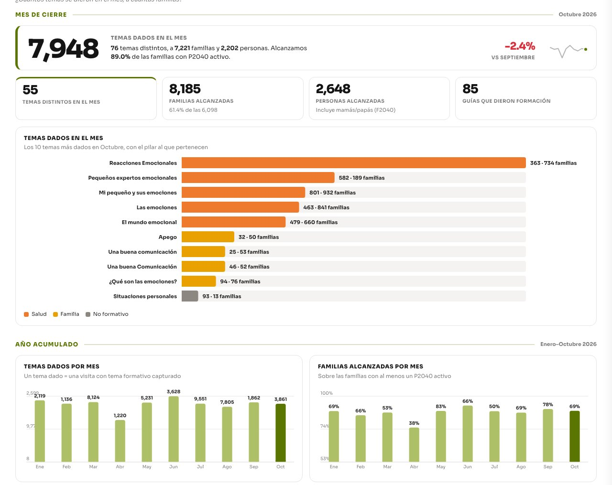
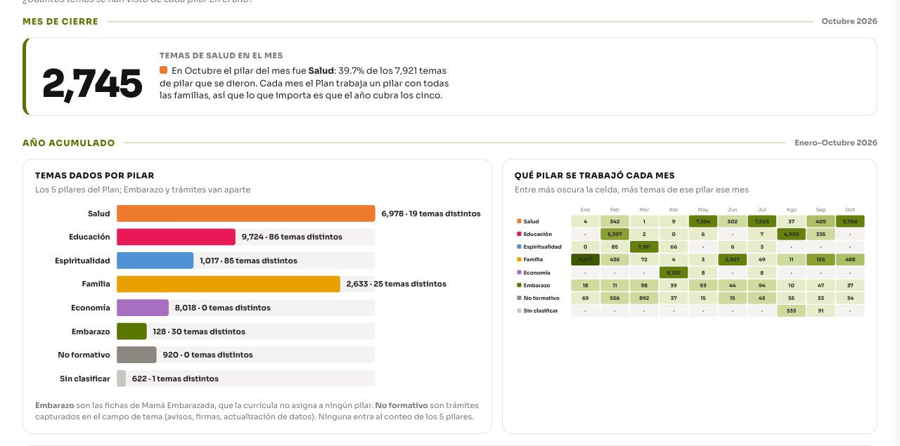

Manual del Reporte de Formación
La formación que dan las guías en las visitas: a cuántas familias llega, qué temas se dan, si van de acuerdo con la edad y qué pilares se cubren.
1¿Para qué sirve?
Muestra la formación que dan las guías en las visitas: cuántos niños del Plan hay en cada familia, si el tema que se dio corresponde a la edad del niño, qué temas se dieron y a cuántas familias, y qué pilares se trabajaron en el año.
Sirve para revisar que la formación llegue a todas las familias y que cada niño reciba la carpeta de su edad.
2¿De dónde viene la información?
| Término | Qué quiere decir |
|---|---|
| Tema dado | Una visita localizada con un tema formativo capturado. |
| Población base | Niños P2040 con estatus Activo al corte, sin perfiles de sistema ni de prueba. |
| Acorde a la edad | La edad cumplida del niño el día de la visita cae dentro del rango de la carpeta. La regla es estricta: no hay tolerancia. |
| Carpeta atrasada | El niño ya es mayor que el rango de la carpeta que recibió. |
| Carpeta adelantada | El niño todavía no llega al rango de esa carpeta. |
3Cómo moverte en el reporte

- Las cuatro secciones: P2040 por familia, Formación acorde a la edad, Temas y familias alcanzadas, y Pilares.
- Comunidad, Localidad, Guía responsable y Pilar filtran todo el reporte; Limpiar filtros regresa a la vista completa.
- Cada sección tiene dos partes: Mes de cierre (el último mes cerrado, comparado contra el anterior) y Año acumulado (de enero a la fecha).
- «Ver detalle →» en las tarjetas abre la lista detrás de cada número.
4Las cuatro secciones
Da clic en una sección para ver qué responde y qué mirar primero.
1 · P2040 por familiaa fondo¿Cuántos niños del Plan tiene cada familia y dónde se concentran?

- Niños P2040 por familia: el promedio, con los niños activos, las familias acompañadas y cuántas tienen 2 o más, y 3 o más (las de mayor carga para la guía).
- Familias por número de P2040: cuántas familias tienen 1, 2, 3… niños en el Plan.
- Dónde se concentran: la composición de las localidades con más niños. «Ver detalle por localidad» trae la tabla completa.
- Más abajo, Las familias, una por una: una tarjeta por familia con sus miembros, cuántos temas recibió cada año y el reparto por pilar. Al dar clic se ve su currículo completo, tema por tema.
2 · Formación acorde a la edada fondo¿Cada niño recibe la carpeta de su edad?

- Temas acordes a la edad en el mes: qué parte de los temas con rango de edad correspondió a la edad del niño, y la diferencia contra el mes anterior en puntos porcentuales.
- Las tarjetas de abajo: niños evaluados, niños con carpeta fuera de su rango, temas de carpeta atrasada y adelantada, y la cobertura del mes (niños P2040 activos que recibieron formación).
- Cada mes, ¿la carpeta correspondió a la edad?: el reparto mes por mes entre acorde, adelantada y atrasada.
- Carpetas que más se salen de rango: en rojo, las carpetas en las que más de la mitad de los temas se dieron a un niño fuera de su rango. Solo cuenta carpetas con suficientes temas en el año.
- «Ver detalle por guía y por carpeta» abre la tabla por guía.
3 · Temas y familias alcanzadasa fondo¿Qué temas se dieron y a cuántas familias llegaron?

- Temas dados en el mes, cuántos fueron distintos, cuántas familias y personas se alcanzaron (incluye mamás y papás) y cuántas guías dieron formación.
- Los 10 temas más dados, con el color de su pilar.
- En el año: los temas dados y el porcentaje de familias alcanzadas, mes por mes.
4 · Pilaresa fondo¿El año está cubriendo los cinco pilares?

- Cada mes el Plan trabaja un pilar con todas las familias. Arriba ves cuál fue el del mes de cierre y qué parte de los temas fue de ese pilar.
- Temas dados por pilar en el año, y qué pilar se trabajó cada mes: entre más oscura la celda, más temas de ese pilar.
- Embarazo (fichas de mamá embarazada), No formativo (trámites capturados como tema: avisos, firmas, actualización de datos) y Sin clasificar van aparte y no cuentan para los cinco pilares.
5Preguntas frecuentes
¿Por qué no aparece el mes en curso?
Porque el reporte muestra el último mes cerrado. El mes en curso aparecerá cuando cierre.
¿Es lo mismo que el indicador Formación del Reporte Mensual?
La «cobertura del mes» mide algo muy parecido: niños P2040 activos que recibieron formación. Si ves alguna diferencia, el número oficial es el del Reporte Mensual.
Un tema aparece dos veces con distinta escritura
Por ejemplo «Una buena comunicación» y «Una buena Comunicación»: el CRM los guarda como temas distintos. Avísale a Análisis para unificarlos.